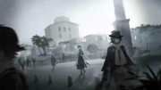
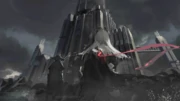
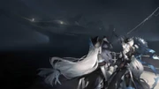
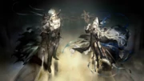
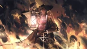
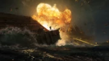

Stultifera Navis synopsis
Acting as the continuation of Under Tides, Stultifera Navis takes place in Gran Faro, an Iberian coastal town known for its last surviving lighthouse, "the Eyes of Iberia," and tells an adventure of the Abyssal Hunters and the Inquisition led by Irene on the hunt for the eponymous Iberian dreadnought that was lost during the Silence while defending the town from the Seaborn's invasion.
It is also the first time the underwater cities of Aegir are explored.
The Eye of Iberia
Gran Faro, the Last Beacon
Gran Faro, the town of the Great Lighthouse. Ever since the Silence that devastated Iberia sixty years ago, the Iberian government had been attempting to reclaim the sea by building a fortification and to recapture the last surviving "Eyes of Iberia." However, after the nation became paranoid with the cultic Church of the Deep that led to the bloody Inquisition against the Islanders, the project foiled abruptly.
By present days, Gran Faro has been left forgotten along with the lighthouse. No one dares to discuss future plans concerning the sea.

After the Sal Viento incident, Kal'tsit, Elysium, and Saint Carmen, the leading High Inquisitor, arrive at Gran Faro to meet Alive Until Sunset, have them return the "key" found in Dewville that have been kept with them for a while, and then hand it to the Abyssal Hunters who finally returned to the country legally under the escort of Irene and Dario the High Inquisitor. There, the members of AUS reveal to the group that they are, in actuality, fragments of a sea Feranmut — akin to Nian and her siblings being fragments of Sui — that has fled the ocean and corruption by the Seaborn. They wish the fellows good luck in using this "key" to search for the lost Stultifera Navis and to reactivate it.
The Hunters deem they must find the ship as soon as possible since it is their only way to return to Aegir.
Meanwhile, Gran Faro has been infiltrated by the followers of the Church of the Deep. Mayor Thiago and his adopted Aegir son, Jordi Fontanarrosa, need to protect the town before this once glorious place will be dismantled by the Inquisitors and the Penal Battalion. Along with the invasion of the Sea Terrors, a mysterious phenomenon called "Nethersea Brand" is slowly encroaching the town and giving birth more Sea Terrors. Trying to protect his only son, Thiago orders Jordi to leave this desolate place while staying back to buy some time for him.
But everything turns to the opposite when Jordi suddenly turns back and reveals himself to Carmen.
Reopening Iberia's Eyes
In order to find the ship, they need to first recapture the "Eyes of Iberia." Revealing himself to be the direct descendant of the famed Aegirian architect Breogan, Jordi wishes to provide his aid by reactivating the lighthouse. So, Jordi, the Hunters, Irene, and Dario sail for the lighthouse. Kal'tsit and Carmen
will regroup with them once they have dealt with the Sea Terrors and meet with the arriving Battalion.

The recapture of the lighthouse is marked by a bitter battle against the Seaborn. This abandoned building has turned into a breeding nest for the Sea Terrors. While clearing their way for the control room, the "Nethersea Brand" is slowly corroding the lighthouse. To make the matter worse, there arrives the legendary "Last Knight," the Kazimierzian hero who embarked on a journey to explore the sea centuries ago, and the Knight has turned into an emotionless Seaborn.
Dario and the Hunters defend the building against the Seaborn while Irene and Jordi are trying to reactivating the lighthouse's system.
Back to Gran Faro, Thiago has uncovered many of the hidden Church members under the help with Elysium. However, he wants to puppet these cultic members to fight against the Inquisitors out of his vengeance for his lost wife who was executed by them. Thiago eventually meets his tragic fall after he is severely injured by them.
Before his last breath, he remains furious on how the Inquisitors have treated the local Aegirs and Gran Faro.
The Ship of Fools
The lighthouse's system has finally reactivated after Jordi's hard work. To his surprise, the lost Stultifera Navis is just nearby and she has been sending signals for the past sixty years. The Hunters decide to sail towards her while bringing Irene along with them. Jordi and Dario will then defend the lighthouse before reinforcement from the Battalion arrives.
The two of them are willing to sacrifice themselves in hope of saving humanity.

Upon boarding the Stultifera Navis, the Hunters and Irene immediately meet swarming Sea Terrors. Skadi, Specter, and Irene head towards her main hall and Gladiia proceeds to search for her engine using the "key." While fighting against the Sea Terrors, Specter somehow regains her consciousness again due to the influence of the ocean
that suppresses her Oripathy and her Seaborn hivemind; she is no longer the insane "Specter" but Laurentina.
Just then, two mysterious figures approach the Hunters and Irene as if they are challenging these unwelcomed guests. They reveal themselves as Captain Alfonso and his first mate Garcia, the sole survivors of the Stultifera Navis. Ever since the Silence, her crew had been fighting bitterly against the Seaborn hivemind; many of them have committed suicide before turning into monsters. Even then, Garcia is just one step closer to become a Seaborn while retaining its human mind, and Alfonso has become a Seaborn hybrid. The trio wish their cooperation, but Alfonso refuses,
believing that there is no way to bring back Iberia's golden age while despising both the Aegirians and an "old age" Iberian.

While tension is building between the two, the ship is facing hidden threat. There appears a small Seaborn, dubbed "Assimilator," that wants to "nourish" everyone for its kin's survival. Assimilator also tries to revive Skadi's Seaborn nature since she is said to possesses the blood of their "god" Ishar-mla. On the other side of the Stultifera Navis, Amaia, a Liberi woman from Gran Faro and a bishop of the Church, is secretly summoning the Nethersea Brands to devour her so that the Hunters will not bring the dreadnought back to Aegir.
Seeing that the Seaborn are destroying the Stultifera Navis, Alfonso agrees to ally with the Hunters and Irene for the time being.
On Gladiia's side, she encounters another Abyssal Hunter named Ulpian, the third commander who is thought to be dead during Ageir's assault onto the Seaborn "god." He has been infiltrating Gran Faro from the very beginning while helping Amaia in the search for the Stultifera Navis. On the other hand, Ulpian has no interest in the Church's nonsense; he is here to stop the Hunters from returning Aegir. To him, if Skadi, who possesses the blood of Ishar-mla, ever returns home, it will only accelerate the annihilation of Aegirian cities. All he needs from the dreadnought is a
hidden technology left behind that could aid Aegir in defeating the source of the Seaborn, and he will sink her once it is finished.
The Hymn of Mankind

The lighthouse survives the Seaborn attack when Carmen and Kal'tsit finally arrived. However, Dario has sacrificed himself in order to defend the building, leaving his body corrupted by the Mark and stained with blood. Despite his death, Dario stands heroically until the very end while holding his kerosene lamp firm against the Sea Terrors, a symbol that Iberia's glory still survives. The two pay respect for the hero,
believing that his death is not in vain for the sake of humanity, and then cremate his body as a farewell to him.
The battle on the Stultifera Navis is still ongoing. Alfonso and Garcia are already exhausted by the fight, and they are on the brink of falling into the Seaborn's hivemind. Despite learning her mentor's death from Amaia's words, Irene remains strong and continues her struggle. The Abyssal Hunters regroup themselves along with Ulpian to take down Assimilator and manage to give a fatal blow onto the savage creature. While dragging its body to heal itself, Amaia meets it and offers herself as nourishment, believing it as a privilege to "return" to the ocean's embrace. The moment Assimilator merges with her, the ocean suddenly goes unnaturally silent. Now morphed itself into a jellyfish-like Seaborn with Liberi traits,
Assimilator strikes back onto the gang and brings severe damages onto the dreadnought.

For the gang, the only way to end this battle is to blow up the broken Stultifera Navis. While the Hunters are preparing themselves for the sinking, Alfonso decides to stay back together with her until the very end. He haughtily sits on his golden throne, says farewell to this mortal world, and then commits suicide before his Seaborn mind possesses him completely. The injured Garcia drags Assimilator into the deep abyss, and Ulpian gives them a final blow before the former completely loses its conscience.
Irene survives the impact with the Hunters' help, she sees an Aegirian underwater city with a glimpse for the first time.
The Hunters fail to return home following the incident, but Gladiia believes this to be lucky so that they will not bring another havoc to their homeland. Thanks to the help of AUS, the Sea Terrors and the Mark retreat suddenly, sparring Gran Faro for the time being. Out of his grand contribution, Jordi is invited by Carmen to be an Inquisitior, the first Islander who ever holds this position. On the other hand, Irene decides to resigns from the Inquisition and decides to go on her own way to mend the wounds between the Islanders and the Iberians. Even though the plan to reestablish connection with Aegir fails once again, Kal'tsit and Gladiia do gain new intel from Breogan's relics concerning the sea, the sea deities, and the Seaborn so that the land could prepare itself from a new danger. Meanwhile, somewhere in
the middle of the ocean, the Last Knight and Ulpian embark on their own voyage to search for the source of the Seaborn.